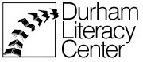

Durham Literacy Center Inc.

Location:
Durham, NC
The Durham Literacy Center (DLC) works to assist Durham County teenagers and adults achieve personal goals and experience positive life change through increased literacy. We help teenagers and adults gain the reading and writing skills, English language skills, and educational credentials (GED) needed to earn a living wage. In addition, we are increasingly seeking ways to integrate technology and computer literacy into our instructional programs to enhance our students’ capacity to achieve their goals.
The mission of the Durham Literacy Center is to empower Durham County residents who want to enrich their lives by improving their literacy skills.
The vision of the Durham Literacy Center is to increase the number of literate adults in Durham by delivering the best possible literacy services to Durham’s English and non-English speaking adults and teens who want to empower their lives through literacy. In achieving this vision we will also have accomplished:
Broader and enriched partnerships
Sustainable funding
Comfortable, safe and secure facilities for all programs
Literacy as a means for life-long learning and leadership development
Inclusion and accessibility to learning for all individuals
Strengthening communications and bonds among cultures and ethnic groups through respect and learning
Partnerships and collaborations that promote literacy
Integration of technology, best practices and innovative learning systems
The judicious and prudent use of human and fiscal resources to achieve agency mission
Our Programs:
Adult Literacy
English for Speakers of Other Languages (ESOL)
Teen Career Academy (TCA)
Escuela de la Familia (bilingual family literacy program)
Adult GED Class
Center for Employment Training GED program
Threshold literacy classes
Real World/Mundo Real Workshops (bilingual life skills workshops)
Computer Literacy (CLIC) classes
Supported Projects
CTC Implementation and Support
Brian Russell
9/2004 — 9/2005
This has been an exciting year for our CTCNet VISTA here at the Durham Literacy Center. Previous VISTAs have laid the framework for the progress that Brian Russell, this year’s VISTA, has made to date. Overall, the VISTAs role is to (1) serve as technology integration specialist and oversee learning offerings, including: PC Basics, ABE, GED, ESOL, Family Literacy and Career Passport; (2) provide web page maintenance and enhancement; and (3) develop technology volunteer plan.
The VISTA was responsible for maintaining and upgrading all of our agency’s computers and labs in addition to assisting in making agency-wide decisions as they pertained to technology. By recruiting and supporting technical volunteers, Brian effectively juggled all of his duties. Our VISTA provided excellent leadership as the co-chair of our ad-hoc tech committee and guided us through many important decisions regarding infrastructure, training and outreach. Please see the 04-05 VISTA’s web-blog for details of some of the projects he worked on: http://www.cpcs.umb.edu/vista/blog/brian_russell/. However, only a few of his accomplishments are listed on his web log - the rest are highlighted below.
The www.durhamliteracy.org Website
The VISTA provided superb research, advice, set-up, development and, ultimately, training to the full staff team on our new website. After research, the VISTA recommended that we use a program called Civicspace.org, freeware with customizable authoring privileges and a straightforward authoring interface. The new website has already attracted funders, individual donations, a multitude of volunteers and strengthened interaction with all of our stakeholders. Each staff member has a blog and the ability to update content. After the VISTA trained the staff on the basics of the webpage and setting policy, many staff have mastered the basics and have set up more features such as discussion forums for volunteers, calendaring and soon-to-be online forms.
IBM Grant Management
As a beta testing site during this past fiscal year, Durham Literacy Center (DLC) English for Speakers of Other Languages (ESOL) introduced the “Reading Recognition” program to approximately 130 students. While there are still some rough spots in the early version of the application, many students indicated that “Reading Recognition” helped them improve their pronunciation, listening and reading.
The VISTA coordinated volunteers to install 3 new computer labs at DLC and its partner-sites. Work included installing software and setup on servers and clients, hardware setup. The VISTA was instrumental in training staff, partners and end users on using the new computer lab and software.
Agency Policy Development
The VISTA effectively researched and gained buy-in by staff and management on best practices for creating policies and procedures appropriate for a non-profit like the Durham Literacy Center. The VISTA identified sample policies from other non-profits and counseled the management on policies to adopt. These policies include, but are not limited to the following:
• Providing donations to partner agencies
• Laptop loans
• Use of the computer lab
• Website content and authoring
The Teen Career Academy
The Teen Career Academy and the Duke Research Service Learning Project – The VISTA created a mobile lab using donated laptops. The VISTA trained volunteers and teen students on how to use the GED interactive software program and others and tutored teens in the program.
Adult Literacy
The VISTA participated in our volunteer training on the intensive reading instruction method called the Wilson Method. From that point, Brian assisted in tutoring some adult literacy students and then led an in-service tutor training activity on the use of technology and in the initial pre-service tutor training session.
The Durham Literacy Center is very appreciative of the assistance and contributions that the Digital Arts Service Corps has provided to our partners and us. Last year, 2004-2005, we were lucky to have a VISTA as knowledgeable and experienced as Brian Russell. The VISTA took our agency to a new level – our technical infrastructure, integrity and our presentation to the outside world via the webpage are all at the strongest point they have been in years.
CTC Tech Support and Technology Planning
Ben Pratt
8/2003 — 8/2004
Goals
1. Revise Webpage
2. Provide Tech Support/ Upgrade Computer Systems
3. Put together Technology Committee
4. Recruit volunteers to facilitate PC Basics Course
5. Offsite Tech Support
6. Documentation
7. Develop DLC’s Technology Plan
The CTCNet VISTA, Ben Pratt, has provided invaluable service to the Durham Literacy Center (DLC) this year. Ben has been able to collaborate with community partners and volunteers to specifically focus on technology and capacity building at DLC and other community technology centers in Durham. To date, he has completely overhauled DLC’s technical infrastructure, including our local area network, administrative computers, plus all computers at our CTC lab housed at our office. DLC also runs two other community labs at partner sites. Ben has made the labs more functional and accessible to our students and the general public. Additionally, Ben has spearheaded the development of an ad hoc technology committee where he recruited local leaders in technology and IT professionals to participate. This ad hoc committee has allowed DLC to establish standards for technology and implement best-practices for the use of technology with our adult learners. We foresee this committee as being adopted by our board of directors as a permanent committee and will develop a long overdue technology plan for our agency. We are also planning to get another VISTA next year to replace Ben. This technology committee will ensure a quick transition as well as training and consistent development of DLC’s technology infrastructure and instructional technology use.
Summary of Project Accomplishments
•Managed technical equipment donations
•Upgraded all PCs to W2K, installed Office XP or 2003
•Put web and mail services into production
•Managed PC Basics course
•Reorganized computer lab and replaced 8 aging lab computers
•Replaced or upgraded all of staff PCs
•Implemented and maintained Red hat Linux server with roaming profiles
•Wireless access is available throughout building by installing new Wireless Access Point
•Cleaned out technology closets
•Recruited technical volunteers and co-chaired technology committee that began the agency’s technology plan
•Came up with lab policies and implemented them
•Reorganized Network Neighborhood, making it easier to find files
•Got virus protection for all PCs
•Provided tech support to staff, volunteers, community/service partners and students
•Updated and maintained www.durhamliteracy.org website
•Organized and coordinated rollout of 40 new PCs from IBM which included software install and setup on servers and clients, hardware setup, and rollout
•Created documentation and materials for next VISTA
•Met with new VISTA to transfer knowledge and ideas
“Overall, this has been a superb use of resources provided by CTCNet and the VISTA project. It’s a win-win for both the agency and the VISTA.”
- Lizzie Ellis-Furlong, supervisor
CTC Program Building and Teaching Assistant
Shlonda Brouchet
4/2001 — 4/2003
1. Recruit, train and support technology volunteers to help students use computers.
2. Access and acquire computer hardware and software
3. Write and publish Computer-Assisted Literacy training manuals in English and Spanish - in paper and on the web.
4. Develop a sustainable GED distance learning program
5. Solicit, procure, and upgrade used laptop computers to be loaned to homebound or disabled students.
6. Evaluate the life impact of increased technology use on literacy and English language clients.
As an Americorps Vista volunteer, Shlonda has supported and enhanced four Durham County Literacy Council (DCLC) projects; the Parent’s Part Family Literacy Project, Techcelerated Pre-GED and GED, PC Basics, English as a Second Language and has gained valuable experience as a teacher and trainer. She has recruited and trained volunteers to teach or assist in all projects. The VISTA has maintained a working relationship with partner sites CET, NCCU and the YMCA.
Shlonda successfully taught Parents’ Part in Cornwallis Road public housing neighborhood in Durham, NC.
At the Durham Literacy Council’s main office, Shlonda taught students by using technology-assisted GED software.
As a tutor Shlonda has taught ESOL (English for Speakers of Other Languages) classes, which includes creating lesson plans, leading small group conversations and trained new tutors to teach the traditional and computer-assisted ESL software.
Shlonda has been instrumental in establishing and maintaining an after school program for Kestrel Heights Charter School.
Shlonda has improved technical support at the Literacy Council, Kestrel Heights Charter School and assisted in maintaining and installing computers in all labs.
Career Passport is a portfolio or notebook containing documents certifying you have met specific academic and workplace standards. The latest implementation is the Internet career interest/personality inventory. Shlonda is the field test manager of this project and has successful coached 4 individuals in completing their portfolio. Shlonda expanded upon DLC’s Career Passport by initiating mini-workshops with focus areas such as “Preparing for the Job Interview.” The project is now nationally recognized and endorsed by the Literacy Volunteers of America. The Career Passport can be found on the LVA’s Promising Practice website.
CTC Program Building and Teaching Assistant
Luke Reinke
8/2001 — 8/2002
Luke has developed and enhanced three curricula: PC Basics, ESOL PC Basics, and a middle school technology curriculum. He recruited and trained volunteers to teach these curricula and established relationships with community partners to fill gaps where needed. All three of these curricula have been placed on the World Wide Web on the Durham County Literacy Council (DCLC) homepage for use by other non-profits or schools. Additionally, Luke greatly improved the sustainability of DCLC’s technology infrastructure, as well as our partner agencies’.
Once the VISTA completed the development of the PC Basics curriculum in the spring of 2002, the VISTA recruited and trained 6 volunteers. Consequently 4 classes were taught entirely by volunteers. A total of 39 students enrolled with 26 finishing the class.
The VISTA developed the PC Basics curriculum in Spanish using lessons in Spanish found on the Internet, translating current lessons from the classes taught in English, and creating new lessons. The curriculum in Spanish is now posted on the Internet. The classes in Spanish have been taught by a group of 5 volunteers.
The curriculum for middle school technology classes was completed and posted on the Internet. Students began taking the NC Computer Skills test in March – 19 students successfully passed.
Technical Infrastructure Capacity-Building
Luke also achieved the following technology objectives for DCLC:
-Configured Linux server for file sharing and email
-Set up all workstations to run ABE/GED and ESOL software from the DCLC server
-Inventoried and setup all laptops in mobile lab for categorized use
-Prepared tech help sheets for all tasks so that someone else could do them
-Inventoried software on all workstations and set them up to have appropriate software, including virus protection software
-Worked on computers at partner site and troubleshot 8 PCs to get GED/Pre-GED software working
-Ran the summer camp computer time at the YMCA for school-aged children
Related Content
None created yet!